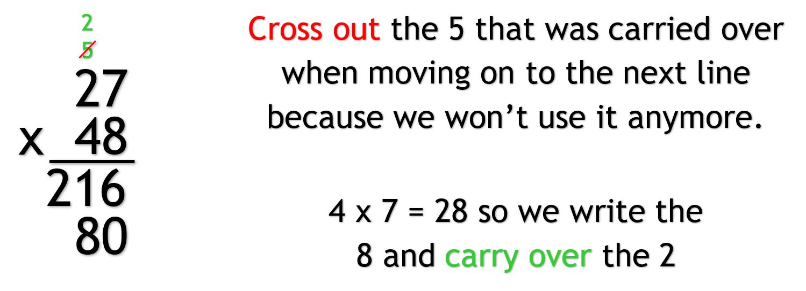

Multiplying Using Columns
Like addition and subtraction, we can write a multiplication problem in columns.
To multiply numbers using columns, we do the same thing we did in addition and subtraction except
we write a multiplication sign and the answer is the product.
This is a common way to multiply numbers with two or more digits.
Multiplying with Two-or-More-Digit Numbers
To multiply two-or-more-digit numbers, we will use columns just like addition and subtract.
Write one number below the other, lining up the place values.
After this is where it is different from addition and subtraction, because we are not multiplying
the numbers one column at a time.
Two-Digit Numbers
Let's start by multiplying two-digit numbers together.
- Write the numbers in columns
- We start by multiplying the ones digit of the bottom number with the ones digit of the
top number.
- Write the answer down
- Then we multiply the ones digit of the bottom number with the tens digit of the top
bottom and write down the answer.
- In the answer area, move down to the next line and write a 0 in the ones place. This
is because we are now moving on to multiplying with the tens place.
- Multiply the tens digit of the bottom number with the ones digit of the top number and
write the answer down next to the 0.
- Now multiply the tens digit of the bottom number with the tens digit of the top number
and write the answer.
- Add the two products together. The sum of these two numbers is the final answer.


What Happens When Along the Way the Product is Greater than Nine?
Let's say we haven't gotten to multiplying with the number in the last column yet, and we have
multiplied numbers where the answer is higher than 9. What do we do?
When that happens, we do the same thing we do in addition when something similar happens, we
regroup and carry over.
Here, we
- Multiply like normal
- Write down the ones digit and carry over the tens digit
- When we multiply the next numbers, add what was carried over to the answer.
- If the answer is greater than 9, and we didn't multiply the number in the last column
yet, repeat the carrying over.
- When we move on to multiplying for the next line, we cross out the numbers that have
been carried over, so we know that we are done using them.
Note: Just like addition, if the answer from multiplying a digit in the last column is
greater than 9, we can go ahead and write it down because there is no carrying over.





Three-or-More-Digit Numbers
Now that we know how to multiply two-digit numbers, multiplying three-or-more-digit numbers is
easy.
Multiplying numbers with three or more digits is the same as multiplying two-digit numbers but with
a couple more steps.
- Multiply every digit in the bottom number with every digit in the top number, just like with
two-digit numbers.
- Similar to multiplying two-digit numbers, when we are using the digits in the bottom number
that are in the hundreds place, thousands place, and so on, we move on to the next line.
- When we move on to the next line, we write the 0s from the line before and then add another 0
in front of them, in the next place value.


Here is an example of multiplying numbers with four digits.
What Happens When there are Numbers that have More Digits Than Others?
Like with addition and subtraction, we still write the numbers the same way as when both
numbers have the same number of digits.
Then multiply the numbers
Takeaway
No matter how many digits the numbers have, they have the same takeaways when multiplying:
- Start with the ones digit of the bottom number and multiply it with the digits of the
top number one at a time, starting with the ones digit and going left.

- After that do the same thing with the bottom number's tens digit, the hundreds
digit, thousands digits, and so on until all the digits in the bottom number have
multiplied the digits in the top number.
- Carry over when needed

- Each line is the product of multiplying a bottom number's digit with all of the top
number's digits
- The number of digits in the bottom number tells us how many numbers, or products, we will
be adding to get the final answer to the multiplication problem.

Tip: Since it doesn't matter which number is at the top or bottom, if you want to add
less numbers, put the number with less digits at the bottom when multiplying.
- Add a 0 on the second line before multiplying. Then starting from the third line onwards,
when we move on to the next line, we add a 0 before we multiply the numbers for that line.
Adding a 0 in each line means writing 0s from the line before and then adding a 0 in front of them
in the next place value. Each line has more zeros than the line before it.

Tip: The product in the first line will not have zeros unless the ones digit in the
bottom number is a 0, or the top number has a 0.